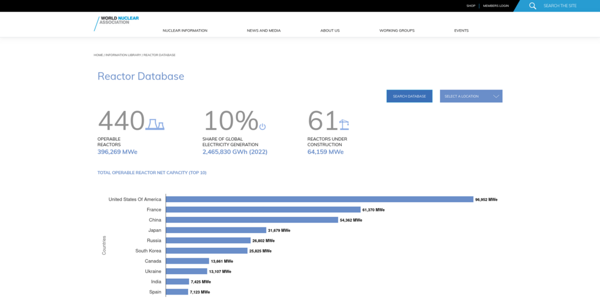

The World Nuclear Association are a trade body representing the nuclear industry. Among the large amounts of data they curate is a database of nuclear reactors and their ongoing performance data. Cottage Labs helped WNA in making this data more publicly available and usable through search and data visualisation
Challenge
Nuclear performance data can be dense and mostly of relevance to experts. Nonetheless, WNA has a remit to communicate with the public about activities in the nuclear industry. As such, they wanted to find a way to make their reactor and performance data available and understandable for members of the public, as well as journalists and science communicators, as well as for industry professionals.
